Na prenájom novostavba 2-izbového bytu s predzáhradkou Na majeri v projekte Corvus
Malacky
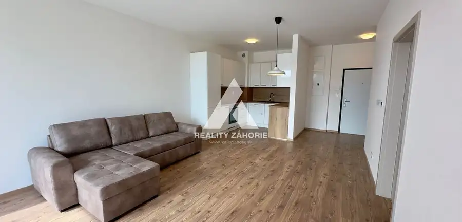
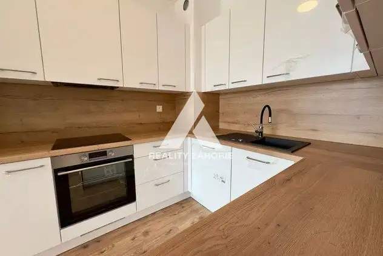
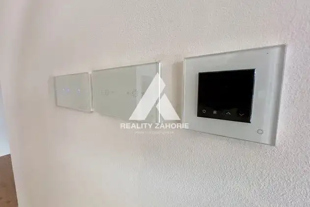
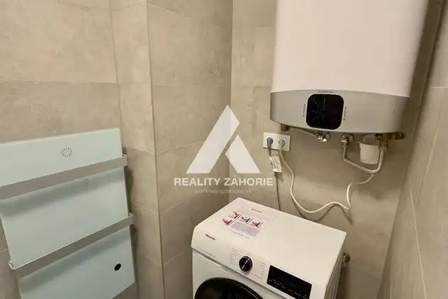
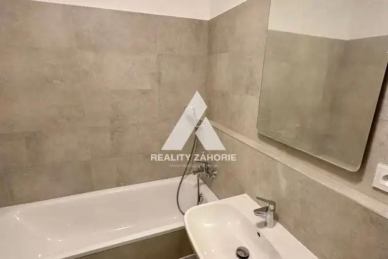
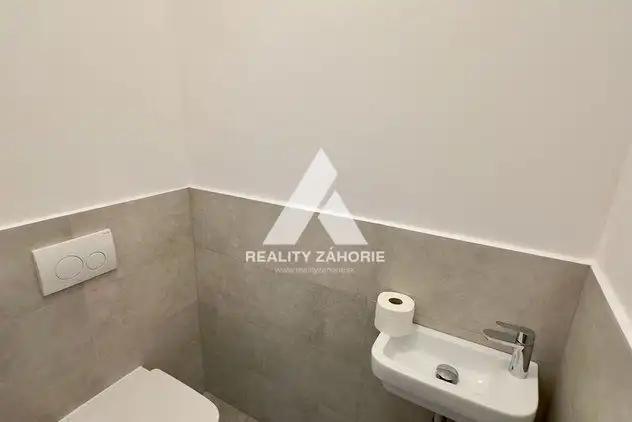
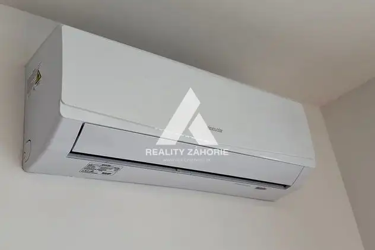
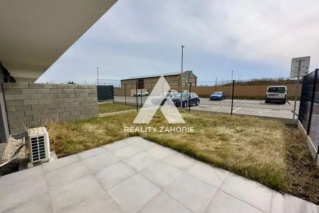
- Dispozícia2-izbový
- Plocha51.96 m²
- Poschodie1. z 4
- StavNovostavba
- VlastníctvoOsobné
- Energetická triedaA
O nehnuteľnosti
Na prenájom čiastočne zariadený 2-izbový byt v projekte Corvus Na majeri.Ponúkaný byt sa nachádza na prízemí bytového domu, ktorý disponuje predzáhradkou. Samozrejmosťou je prevedenie vo vysokom štandarde, parkovacie miesto a pivničná kobka. Úžitková plocha bytu je 51,96 m², predzáhradka o výmere 60 m² a pivnica 2,77 m². Byt disponuje na mieru robenou kuchynskou linkou so vstavanými spotrebičmi, sedacou súpravou a manželskou posteľou, zariadenou kúpeľňou s kotlom a práčkou. Neodmysliteľnou súčasťou bytu je elektrické podlahové vykurovanie s termostatmi, klimatizácia, elektrické žalúzie a SMART vybavenie bytu, ktorým sa jednoducho ovláda vykurovanie, chladenie, tienenie a osvetlenie bytu. Výška nájmu 700,- Eur s energiami. Voľný od 28.9. 2026 vhodný pre 1 max 2 dospelé osoby. Lokalita, premyslené dispozície, vysoký nadštandard, to všetko v sebe spája najnovší a dokonale premyslený projekt bytového domu Corvus. Moderná architektúra zasadená v tichom prostredí s najkrajším výhľadom v širokom okolí. Vymeňte svoj byt za domov a presvedčte sa, že pri výbere vášho nového domova by ste sa mali riadiť nie len srdcom, ale aj rozumom. Zadovážte si Váš nový domov s profesionálnym realitným, právnym a finančným poradenstvom. O všetko sa postaráme na najvyššej úrovni. Exkluzívny predaj projektu zabezpečuje www.realityzáhorie.sk Reality Záhorie Bc. Barbora Brezanská tel. č. 0903 060 504 email: brezanska@realityzahorie.sk
Parametre
- Bezpečnosť
- Bezpečnostné dvere
- Cena vrátane energií
- Áno
- Druh
- 2 izbový byt
- Dátum zverejnenia
- 23. 09. 2026
- Energetický certifikát budovy
- A
- Orientácia
- Južná
- Podlažie
- 1
- Počet izieb / miestností
- 2
- Počet nadzemných podlaží
- 4
- Počet spální
- 1
- Rok kolaudácie
- 2023
- Rok výstavby
- 2022
- Stav nehnuteľnosti
- Novostavba
- Telekomunikácie
- Optická sieť
- Typ
- Prenájom
- Typ konštrukcie
- Tehlová
- Umiestnenie
- Prízemie
- Vlastníctvo
- Osobné
- Vybavenie
- Sklad, Vyhradené parkovanie, Strážna služba, Bezbariérový prístup, Detské ihrisko, Záhrada
- Vybavenie objektu
- Štandardné
- Vykurovanie
- Klimatizacia, Podlahové
- Zariadenie
- Čiastočne zariadené
- Úžitková plocha
- 51.96 m²
Kde to je


Mohlo by Vás zaujímať
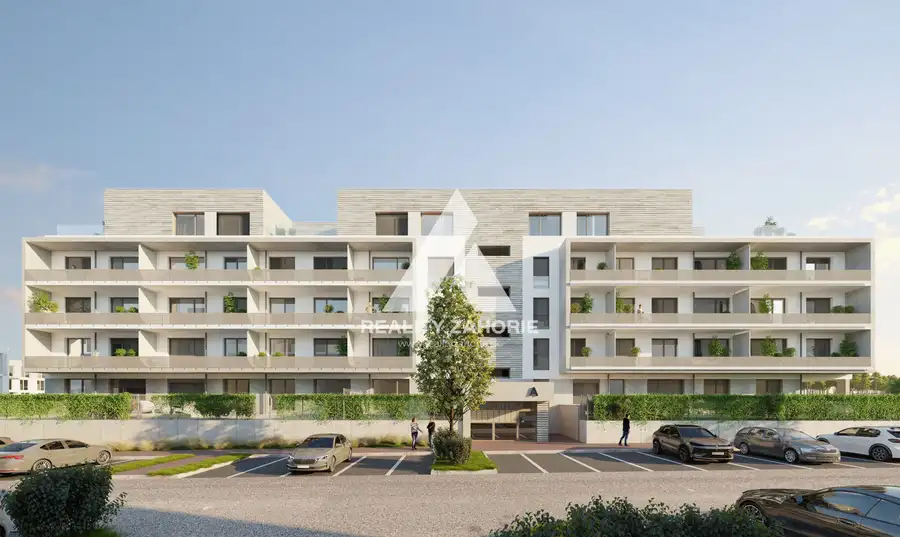
BytNové 211 000 €3-izbový byt s veľkou terasou v projekte Corvus Atrium – nová etapa Malacky 3-izbový57.66 m²2. podlažie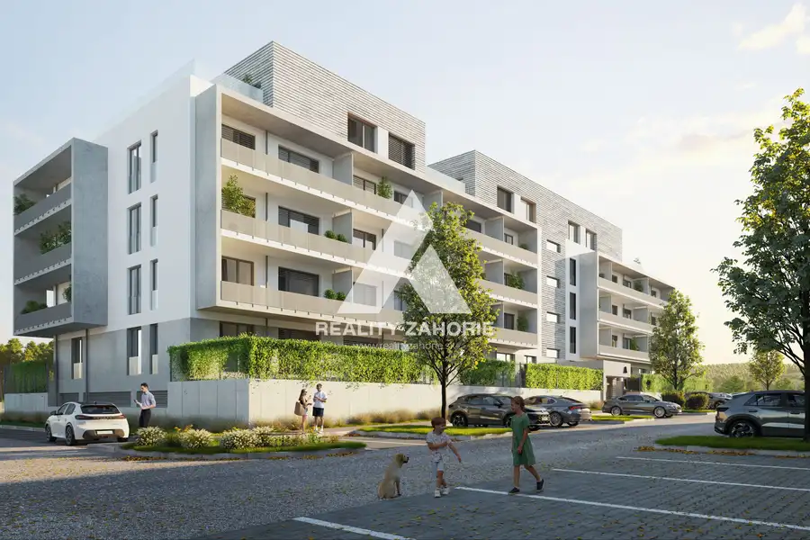
BytNové 182 000 €2-izbový byt s veľkou terasou v projekte Corvus Atrium – nová etapa Malacky 2-izbový46.41 m²2. podlažie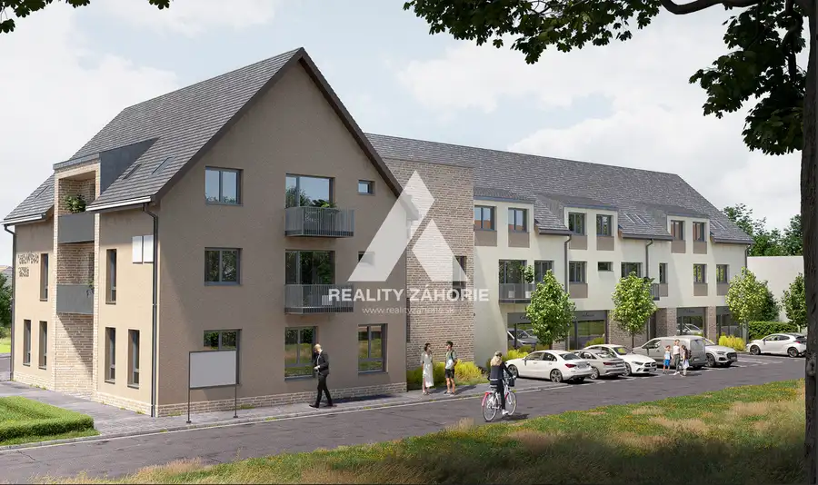
BytNové 153 400 €Nadštandardne vybavený 3-izbový byt C2.4 – projekt Panský Dvor, Sekule Sekule 3-izbový68.89 m²1. podlažie